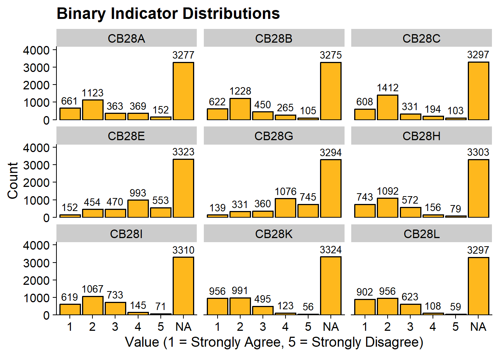
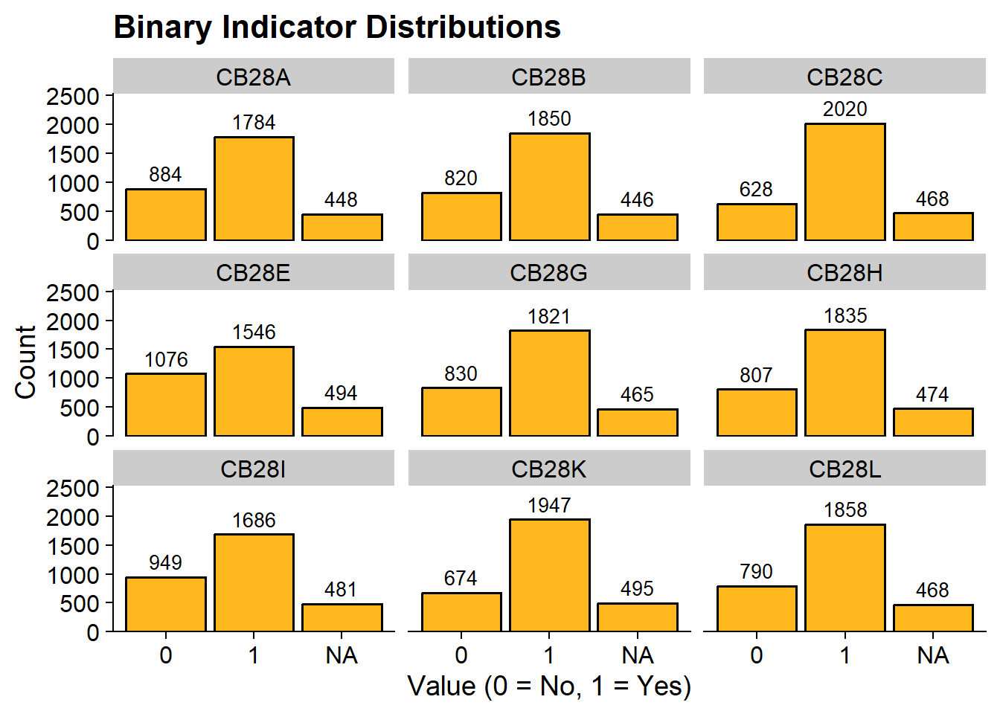
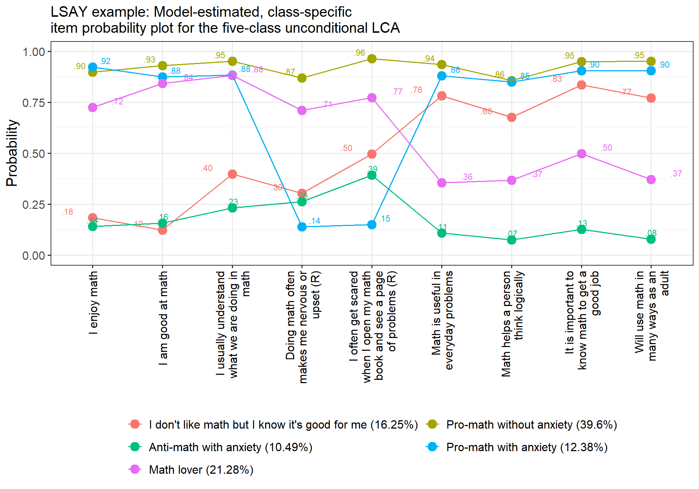

Latent Class Analysis
Last Updated: 2026-04-01
Enumeration
library(tidyverse)
library(MplusAutomation)
library(haven)
library(here)
library(sjPlot)
library(glue)
library(cowplot)All functions and datasets used in this walkthrough can be found here
Data Wrangling
Read in full LSAY data set and subset
#Select variables from raw dataset
data_raw <- read_sav(here("data", "ICPSR_30263", "DS0001", "30263-0001-Data.sav"), user_na =TRUE)
lsay_select <- data_raw %>%
select(CASENUM, COHORT, RSTEMM,
CB28A, CB28B, CB28C, CB28E, CB28G, CB28H, CB28I, CB28K, CB28L) # 12th grade
view_df(lsay_select)
write_csv(lsay_select, here("data","lsay_cleaned.csv"))Read in .csv
lsay_csv <- read_csv(here("data", "lsay_cleaned.csv")) %>%
mutate(
across(c(-CASENUM, COHORT), ~ if_else(.x %in% c(-99, -98, -96, -95), NA_real_, .x))
)Latent Class Indicators
| Variable | Item Label |
|---|---|
| CB28A | I enjoy math |
| CB28B | I usually understand what we are doing in math |
| CB28C | Doing math often makes me nervous or upset |
| CB28E | I often get scared when I open my math book and see a page of problems |
| CB28G | Math is useful in everyday problems |
| CB28H | Math is useful in everyday problems |
| CB28I | Math helps a person think logically |
| CB28K | It is important to know math to get a good job |
| CB28L | I will use math in many ways as an adult |
Response options
| Level | Label |
|---|---|
| 1 | Strongly Agree |
| 2 | Agree |
| 3 | Not Sure |
| 4 | Disagree |
| 5 | Strongly Disagree |
Descriptive Statistics
Frequency
## CASENUM COHORT RSTEMM CB28A CB28B
## Min. :1001 Min. :1.000 Min. :0.0000 1 : 661 1 : 622
## 1st Qu.:2487 1st Qu.:1.000 1st Qu.:0.0000 2 :1123 2 :1228
## Median :3973 Median :2.000 Median :0.0000 3 : 363 3 : 450
## Mean :3973 Mean :1.524 Mean :0.0624 4 : 369 4 : 265
## 3rd Qu.:5459 3rd Qu.:2.000 3rd Qu.:0.0000 5 : 152 5 : 105
## Max. :6945 Max. :2.000 Max. :1.0000 NA's:3277 NA's:3275
## NA's :1666
## CB28C CB28E CB28G CB28H CB28I CB28K
## 1 : 608 1 : 152 1 : 139 1 : 743 1 : 619 1 : 956
## 2 :1412 2 : 454 2 : 331 2 :1092 2 :1067 2 : 991
## 3 : 331 3 : 470 3 : 360 3 : 572 3 : 733 3 : 495
## 4 : 194 4 : 993 4 :1076 4 : 156 4 : 145 4 : 123
## 5 : 103 5 : 553 5 : 745 5 : 79 5 : 71 5 : 56
## NA's:3297 NA's:3323 NA's:3294 NA's:3303 NA's:3310 NA's:3324
##
## CB28L
## 1 : 902
## 2 : 956
## 3 : 623
## 4 : 108
## 5 : 59
## NA's:3297
## Plot
data_long <- lsay_csv %>%
pivot_longer(c(CB28A:CB28L), names_to = "variable")
# Bar plot for 0/1 indicators
ggplot(data_long, aes(x = factor(value))) +
geom_bar(fill = "#FEB81D", color = "black") +
geom_text(stat = "count", aes(label = after_stat(count)),
vjust = -0.5, size = 3.5) +
facet_wrap(~ variable) +
scale_y_continuous(expand = expansion(mult = c(0, 0.25))) +
labs(
title = "Binary Indicator Distributions",
x = "Value (1 = Strongly Agree, 5 = Strongly Disagree)",
y = "Count"
) +
theme_cowplot()
Recode variables
Frequency
lsay_cleaned <- lsay_csv %>%
mutate(
across(
c(CB28A, CB28B, CB28C, CB28H, CB28I, CB28K, CB28L),
~ case_when(
.x %in% c(1, 2) ~ 1,
.x %in% c(3, 4, 5) ~ 0,
TRUE ~ NA_real_
)
),
across(
c(CB28E, CB28G),
~ case_when(
.x %in% c(1, 2, 3) ~ 0, # Reverse coding
.x %in% c(4, 5) ~ 1,
TRUE ~ NA_real_
)
)
) %>%
filter(COHORT == 2) # Filter Cohort 2 (N = 3116)
lsay_cleaned %>%
mutate(across(starts_with("CB"), ~ as.factor(.x))) %>%
summary()## CASENUM COHORT RSTEMM CB28A CB28B
## Min. :1002 Min. :2 Min. :0.00000 0 : 884 0 : 820
## 1st Qu.:2493 1st Qu.:2 1st Qu.:0.00000 1 :1784 1 :1850
## Median :3974 Median :2 Median :0.00000 NA's: 448 NA's: 446
## Mean :3976 Mean :2 Mean :0.06521
## 3rd Qu.:5462 3rd Qu.:2 3rd Qu.:0.00000
## Max. :6943 Max. :2 Max. :1.00000
## NA's :877
## CB28C CB28E CB28G CB28H CB28I CB28K
## 0 : 628 0 :1076 0 : 830 0 : 807 0 : 949 0 : 674
## 1 :2020 1 :1546 1 :1821 1 :1835 1 :1686 1 :1947
## NA's: 468 NA's: 494 NA's: 465 NA's: 474 NA's: 481 NA's: 495
##
##
##
##
## CB28L
## 0 : 790
## 1 :1858
## NA's: 468
##
##
##
## Plot
data_long <- lsay_cleaned %>%
pivot_longer(c(CB28A:CB28L), names_to = "variable")
# Bar plot for 0/1 indicators
ggplot(data_long, aes(x = factor(value))) +
geom_bar(fill = "#FEB81D", color = "black") +
geom_text(stat = "count", aes(label = after_stat(count)),
vjust = -0.5, size = 3.5) +
scale_y_continuous(expand = expansion(mult = c(0, 0.25))) +
facet_wrap(~ variable) +
labs(
title = "Binary Indicator Distributions",
x = "Value (0 = No, 1 = Yes)",
y = "Count"
) +
theme_cowplot()
Enumeration
R Code using MplusAutomation to estimate 1 through 8
class models
lca_6 <- lapply(1:8, function(k) {
lca_enum <- mplusObject(
TITLE = glue("{k}-Class"),
VARIABLE = glue(
"categorical = CB28A - CB28L;
usevar = CB28A - CB28L;
classes = c({k}); "),
ANALYSIS =
"estimator = mlr;
type = mixture;
starts = 500 100;
processors = 10;",
OUTPUT = "sampstat residual tech11 tech14;",
usevariables = colnames(lsay_cleaned),
rdata = lsay_cleaned)
lca_enum_fit <- mplusModeler(lca_enum, glue(here("lca_enumeration","lsay.dat")),
modelout= glue(here("lca_enumeration","c{k}_lsay.inp")),
check=TRUE, run = TRUE, hashfilename = FALSE)
})Model Fit Summary
source(here("functions", "extract_mplus_info.R"))
source(here("functions","enum_table.R"))
# Define the directory where all of the .out files are located.
output_dir <- here("lca_enumeration")
# Get all .out files
output_files <- list.files(output_dir, pattern = "\\.out$", full.names = TRUE)
# Process all .out files into one dataframe
final_data <- map_dfr(output_files, extract_mplus_info_extended)
# Extract Sample_Size from final_data
sample_size <- unique(final_data$Sample_Size)
output_enum <- readModels(here("lca_enumeration"), quiet = TRUE)
enum_table_full(output_enum)| Model Fit Summary Table1 | |||||||||||
| Classes | Par | LL | % Converged | % Replicated |
Model Fit Indices
|
LRTs
|
Smallest Class
|
||||
|---|---|---|---|---|---|---|---|---|---|---|---|
| BIC | aBIC | CAIC | AWE | VLMR | BLRT | n (%) | |||||
| 1-Class | 9 | −14,670.48 | 100% | 100% | 29,411.98 | 29,383.39 | 29,420.98 | 29,510.01 | – | – | 2675 (100%) |
| 2-Class | 19 | −13,249.01 | 100% | 100% | 26,647.95 | 26,587.58 | 26,666.95 | 26,854.90 | <.001 | <.001 | 1001 (37.4%) |
| 3-Class | 29 | −12,913.20 | 90% | 100% | 26,055.26 | 25,963.12 | 26,084.26 | 26,371.12 | <.001 | <.001 | 457 (17.1%) |
| 4-Class | 39 | −12,706.57 | 49% | 98% | 25,720.91 | 25,597.00 | 25,759.91 | 26,145.69 | <.001 | <.001 | 283 (10.6%) |
| 5-Class | 49 | −12,548.94 | 63% | 97% | 25,484.56 | 25,328.88 | 25,533.57 | 26,018.26 | <.001 | <.001 | 281 (10.5%) |
| 6-Class | 59 | −12,495.20 | 54% | 30% | 25,456.01 | 25,268.55 | 25,515.01 | 26,098.62 | 0.02 | <.001 | 140 (5.2%) |
| 7-Class | 69 | −12,455.10 | 29% | 17% | 25,454.74 | 25,235.50 | 25,523.74 | 26,206.27 | 0.02 | <.001 | 125 (4.7%) |
| 8-Class | 79 | −12,420.32 | 37% | 43% | 25,464.09 | 25,213.08 | 25,543.09 | 26,324.54 | 0.00 | <.001 | 113 (4.2%) |
| 1 Note. Par = Parameters; LL = model log likelihood; BIC = Bayesian information criterion; aBIC = sample size adjusted BIC; CAIC = consistent Akaike information criterion; AWE = approximate weight of evidence criterion; BLRT = bootstrapped likelihood ratio test p-value; VLMR = Vuong-Lo-Mendell-Rubin adjusted likelihood ratio test p-value; cmPk = approximate correct model probability. | |||||||||||
Visualization

Plot with labels
# Title
title <- "LSAY example: Model-estimated, class-specific \nitem probability plot for the five-class unconditional LCA"
# Model
model_output <- output_enum$c5_lsay.out
# Item names
item_labels <- c("CB28A" = "I enjoy math",
"CB28B" = "I am good at math",
"CB28C" = "I usually understand what we are doing in math",
"CB28E" = "Doing math often makes me nervous or upset (R)",
"CB28G" = "I often get scared when I open my math book and see a page of problems (R)",
"CB28H" = "Math is useful in everyday problems",
"CB28I" = "Math helps a person think logically",
"CB28K" = "It is important to know math to get a good job",
"CB28L" = "Will use math in many ways as an adult")
# Class labels
class_labels <- c("1" = "I don't like math but I know it's good for me (16.25%)",
"2" = "Pro-math without anxiety (39.6%)",
"3" = "Anti-math with anxiety (10.49%)",
"4" = "Pro-math with anxiety (12.38%)",
"5" = "Math lover (21.28%)")
plot_data <- data.frame(model_output$parameters$probability.scale) %>%
dplyr::select(est, LatentClass, param, category) %>%
mutate(
est = as.numeric(est),
items = factor(item_labels[param], levels = item_labels),
class = factor(class_labels[as.character(LatentClass)],
levels = class_labels)
) %>%
filter(category == 2)
plot_data %>%
ggplot(aes(
x = items,
y = est,
colour = class,
group = class
)) +
geom_point(size = 4) + geom_line() +
geom_text(aes(label = sub("^0\\.", ".", sprintf("%.2f", est))),
position = position_dodge(width = 0.9),
vjust = -0.5, size = 3, show.legend = FALSE) +
ylim(0, 1) +
scale_x_discrete(
"",
labels = function(x)
str_wrap(x, width = 20)
) +
labs(title = title,
y = "Probability") +
theme_bw(12) +
guides(colour = guide_legend(nrow = 3, byrow = TRUE)) +
#scale_fill_grey(start = 0.8, end = 0.2) + # Gives different shades
theme(
text = element_text(family = "sans", size = 15),
legend.text = element_text(family = "sans", color = "black"),
legend.title = element_blank(),
legend.position = "bottom",
legend.justification = "center",
axis.text.x = element_text(angle = 90, vjust = 0.5, hjust = 1, color = "black"),
plot.subtitle = element_text(face = "italic", size = 15),
plot.title = element_text(size = 15),
strip.background = element_rect(fill = "grey90", color = "black", size = 1),
strip.text = element_text(size = 15)
) 